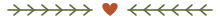
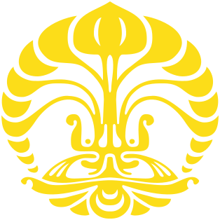

Antrean konseling panjang
Jumlah mahasiswa yang butuh dukungan jauh lebih besar dari kapasitas konselor kampus.
N2CIAS / Universitas

Mahasiswa bisa bercerita kapan saja lewat Nesya. Tim kemahasiswaan melihat kapan dan di mana kebutuhan naik, tanpa membaca percakapan siapa pun.
Bekerja bersama kampus di Indonesia

Universitas Indonesia ITB
ITB Gadjah Mada
Gadjah Mada Telkom University
Telkom UniversityJumlah mahasiswa yang butuh dukungan jauh lebih besar dari kapasitas konselor kampus.
Kebutuhan naik tajam di periode tertentu, sering tanpa terlihat oleh kampus.
Banyak mahasiswa belum siap datang ke ruang konseling untuk langkah pertama.
Nesya tersedia 24/7 lewat browser, dalam bahasa sehari-hari mahasiswa.
Mahasiswa yang butuh lebih diarahkan ke konselor kampus, dengan ringkasan atas izin mereka.
Tren agregat per fakultas dan periode, untuk menambah slot konseling di saat yang tepat.
N2CIAS memperluas jangkauan tim konseling yang sudah ada.
Pilot biasanya berjalan 8–12 minggu untuk satu kelompok, dengan onboarding, target yang disepakati, dan evaluasi bersama.